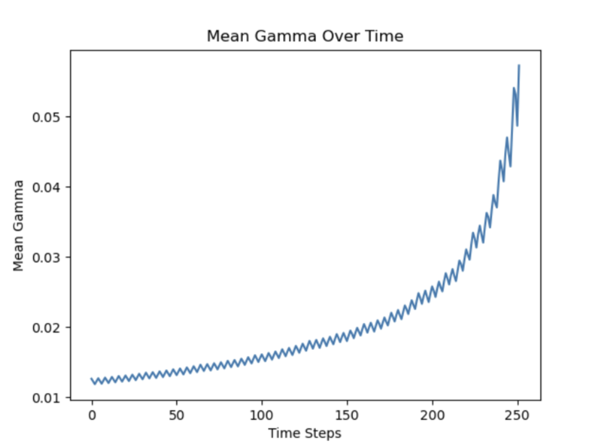

Optimal Hedging with Advanced Delta Modelling
- Optimal Hedging with Advanced Delta Modelling
- Part I: Volatility Arb with improved GBM and Monte-Carlo
- Sub-part 1: Consider improvements to GBM asset evolution (using Milstein schemes)
- Sub-part 2: Under the condition of known , analytically and with Monte-Carlo confirm the items below
- 1. Actual Volatility Hedging
- (1) Using Milstein Schemes to Improve the GBM Model
- (2) Calculating the Option Price under Actual Volatility
- (3) Deriving the Delta Hedging Strategy and Calculating the Hedging Cost
- (4) Confirming that under known realized volatility, actual volatility hedging will result in a known total
- (5) Calculate the adjusted hedging cost using actual volatility and confirm whether the total equals the target total
- (6) With the specific expression for the hedging cost at hand, we can substitute it into the formula for calculating the total P&L and proceed with simplification
- 2. Implied Volatility Hedging
- 3. The total of implied volatility hedging depends on multiple parameters and Greeks. Here are the most important factors in the hedging strategy and their impact on
- 4. Monte Carlo simulation
- 1. Actual Volatility Hedging
- Sub-part 3: Other Analysis
- Part II: Minimum Variance Delta
Part I: Volatility Arb with improved GBM and Monte-Carlo
Sub-part 1: Consider improvements to GBM asset evolution (using Milstein schemes)
Volatility Arb (Volatility Arbitrage): This refers to a strategy that exploits the difference between realized volatility in the market and the implied volatility of option prices. By hedging against changes in volatility, investors attempt to profit from variations between different options.
Improved GBM (Improved Geometric Brownian Motion): Typically, geometric Brownian motion is used to simulate the price evolution of financial assets. Here, we can use either the Euler-Maruyama or Milstein methods to simulate the asset evolution of geometric Brownian motion (GBM).
The basic idea of the Euler-Maruyama method is to approximate the evolution over a small-time step as a constant, introducing a random term to simulate volatility.
The typical Euler-Maruyama evolution formula is: , where is the drift rate of the asset, is the volatility of the asset, and is a standard normal distribution random variable.
On the other hand, the Milstein method is an improvement over Euler-Maruyama, especially suitable for SDEs with stochastic volatility. By correcting for the derivative of volatility, it more accurately captures the evolution of volatility.
The Milstein evolution formula is: , where , , and have the same meanings as above, and is the second derivative of volatility.
The Milstein method is an improvement over Euler-Maruyama, especially suitable for models with stochastic volatility, providing more accurate results but with relatively higher computational complexity. In this paper, we will use the Milstein method to improve GBM.
What is Milstein method?
When using the Milstein method to simulate the asset evolution of geometric Brownian motion (GBM), it is typically done by approximating the stochastic differential equation (SDE) to obtain changes in asset prices over future time steps. Here are the detailed mathematical steps for simulating using the Milstein method:
We already have the SDE for GBM:
1. Taylor Expansion
We perform a Taylor expansion on the asset price over the time step . The first-order Taylor expansion formula is: , where is the first derivative of the asset price with respect to time.
2. Compute Second Derivative
We calculate the second derivative of the asset price with respect to time. We know the first derivative of the asset price is:
Now, we will calculate the second derivative with respect to time of this first derivative.
First, differentiate the first derivative with respect to time : , where represents the derivative of with respect to time, and is the second derivative of with respect to time. Since is a constant, is zero.
Next, we need to calculate , which is the first derivative with respect to time. Substitute the expression for the first derivative into the above equation:
Note that the derivative of the Brownian motion is white noise, i.e., , where is a standard normal distribution random variable.
3. Apply to Evolution Formula
Apply the second derivative to the Taylor expansion evolution formula: . This is the asset evolution formula that considers the second derivative of volatility.
What is low differentiation sequences and Brownian bridges?
1. For Low Discrepancy Sequences
Low Discrepancy Sequences are sets of points arranged according to certain rules, aiming to uniformly cover the sample space in high-dimensional settings. One common low discrepancy sequence is the Sobol sequence. Mathematically, low discrepancy sequences seek to minimize the discrepancy between the set points. This can be understood through the following mathematical definition:
Let be a set of points, and be the volume enclosing the point set . The discrepancy of the point set is defined as:
Here, is an interval in the sample space, and and are the volumes of the set and the interval , respectively. The goal of a low discrepancy sequence is to minimize the discrepancy.
2. For Brownian Bridge
The Brownian Bridge is a variation of Brownian motion, characterized by a continuous sample path that is not everywhere differentiable. The Brownian Bridge can be defined in terms of Brownian motion as: . Here, is the time parameter. Mathematically, the path of the Brownian Bridge is continuous everywhere but not differentiable everywhere. Specifically, it satisfies Holder continuity, meaning there exist constants and such that for all :
This indicates that the path of the Brownian Bridge does not exhibit sudden changes like Brownian motion but possesses a certain level of smoothness within small time intervals.
Sub-part 2: Under the condition of known , analytically and with Monte-Carlo confirm the items below
-
Confirm that actual volatility hedges lead to known aggregate .
-
Confirm and demonstrate that implied volatility hedges lead to uncertain aggregate, path-dependent and describe which parameters/Greeks they depend on.
Here is the theoretical analysis:
1. Actual Volatility Hedging
(1) Using Milstein Schemes to Improve the GBM Model
As mentioned above, we use the Sobol sequence to generate a Brownian bridge and apply it to the Milstein schemes to improve the GBM model, resulting in the asset price evolution formula:
(2) Calculating the Option Price under Actual Volatility
This is substituted into the Black-Scholes option pricing formula. We still consider the European call option, whose price is given by:
Where,
Substitute the evolution formula into the Black-Scholes formula
Where,
(3) Deriving the Delta Hedging Strategy and Calculating the Hedging Cost
-
Calculate the Delta value of the Delta hedging strategy
We already know the Delta formula for the option price with respect to the asset price:
Where, -
Calculate the hedging cost
The general formula for hedging cost is: Where, -
We substitute these formulas into the hedging cost formula
-
Calculate
-
Calculate
-
Calculate the future asset price
-
Calculate the hedging cost
-
(4) Confirming that under known realized volatility, actual volatility hedging will result in a known total
-
Substituting the actual volatility
When calculating , substitute the actual volatility into the model: This gives under the actual volatility. -
Calculate the Delta value of the Delta hedging strategy using known parameters and actual volatility
This is the Delta value in the Delta hedging strategy. -
Calculate the hedging cost corresponding to the Delta value of the Delta hedging under the original volatility
-
Adjust the quantity of Delta based on the relationship between the target total and the hedging cost
This gives the adjusted Delta value of the Delta hedging.
(5) Calculate the adjusted hedging cost using actual volatility and confirm whether the total equals the target total
(6) With the specific expression for the hedging cost at hand, we can substitute it into the formula for calculating the total P&L and proceed with simplification
-
First, let's list the expressions to be substituted
-
Hedging Cost ()
-
Adjusted Delta ()
-
Total P&L ()
-
-
Now, we substitute and into the formula for :
-
Next, we note that appears twice in the formula, and in the same way, we can combine them for simplification. Additionally, also appears twice with opposite signs, which can cancel each other out. The simplified formula is:
In this simplified formula:
- is divided by the change in stock price, reflecting the relationship between the target total P&L and the change in stock price.
- The final result is associated with the change in option price .
2. Implied Volatility Hedging
To rigorously integrate Greeks into the mathematical process of proving that implied volatility hedging results in uncertain and path-dependent total , we need to construct a more detailed model that reflects the impact of these Greeks on the hedging strategy. Below is a relatively detailed model and steps showing how these Greeks influence the of the hedging strategy.
(1) Asset Price Simulation
Asset price simulation still uses geometric Brownian motion, calculating the asset price for each time step using the following equation:
(2) Dynamic Execution of Hedging Strategy
This is a key step where we calculate and adjust the hedging position at each time point . The hedging position is mainly determined by Delta, but is also influenced by other Greeks.
-
Calculating Delta () and Gamma (): Calculate Delta and Gamma using the Black-Scholes model. Delta is used to determine the hedging position, while Gamma is used to estimate the change in Delta.
-
Adjusting the Hedging Position: The change in the hedging position depends on the change in Delta. However, due to the influence of Gamma, the change in Delta is not linear, so we need to consider the change in the asset price's effect on Delta:
(3) Calculating Hedging Costs and
-
Calculating Transaction Costs: Transaction costs are determined by the change in the asset price each time the position is adjusted. If represents the transaction cost per unit of asset, then the transaction cost at time is:
-
Calculating Holding Costs: Holding costs are determined by the cost of capital and the decay of the option's time value (Theta). If represents the cost of capital rate, then the holding cost can be expressed as:
-
Total Hedging Cost is the sum of transaction costs and holding costs
-
Total considers the final payoff of the option, the final value of the hedging position, and the total hedging cost:
This model and equations reflect the role of Delta, Gamma, Vega, and Theta, among other Greeks, in hedging strategies and how they influence the . By simulating this model, we can demonstrate the uncertainty and path dependency of resulting from implied volatility hedging.
However, it's worth noting that such simulation requires appropriate market data and parameters, and in actual application, the model itself may have limitations, and market conditions can be very variable.
3. The total of implied volatility hedging depends on multiple parameters and Greeks. Here are the most important factors in the hedging strategy and their impact on
(1) Implied Volatility (IV)
Implied volatility represents the market's expectation of the future volatility of the asset's price. Changes in implied volatility directly affect the price of options, especially those that are far from the expiration date, where the impact is more significant.
(2) Delta (Δ)
Delta represents the sensitivity of the option's price to changes in the price of the underlying asset. Hedging strategies typically aim to maintain a Delta-neutral position, reducing the direct impact of asset price changes on .
(3) Gamma (Γ)
Gamma represents the sensitivity of Delta to changes in the price of the underlying asset. A high Gamma value means that small changes in the asset's price may lead to significant changes in Delta, potentially increasing hedging costs due to the need for more frequent adjustments of the hedging position.
(4) Vega (ν)
Vega represents the sensitivity of the option's price to changes in volatility. Changes in implied volatility affect the time value and the overall value of the option, thereby affecting the hedging strategy's .
(5) Theta (Θ)
Theta represents the rate at which the option's value decays over time. Theta affects the value of the hedging position over time, especially as the option approaches its expiration date, where the impact of Theta becomes more pronounced.
(6) Rho (ρ)
Rho represents the sensitivity of the option's price to changes in the risk-free interest rate. In market environments where interest rates change significantly, Rho can have a substantial impact on .
(7) Expiration Time (T)
The expiration time of the option affects the time value of the option. The longer the time until expiration, the higher the time value of the option. The passage of time (Theta) causes the option's value to decay, thereby affecting the hedging strategy's .
(8) Volatility Skew
The volatility skew describes the relationship between implied volatilities of options with different strike prices. Changes in the volatility skew can affect the of hedging strategies involving options with different strike prices.
4. Monte Carlo simulation
This code is a demo for a Monte Carlo simulation using the Milstein scheme for stock price simulation. It computes the P&L for both actual and implied volatility hedging strategies and then analyzes the results. The comments in the code explain the different steps of the process.
import numpy as np
import scipy.stats as stats
from sobol_seq import i4_sobol_generate
# Parameter settings
S0 = 100 # Initial stock price
K = 100 # Strike price
T = 1.0 # Time to maturity
r = 0.05 # Risk-free rate
sigma_actual = 0.3 # Actual volatility
sigma_iv = 0.2 # Implied volatility
mu = r # Expected return
num_paths = 1000 # Number of paths
num_steps = 252 # Number of time steps
# Monte Carlo simulation
PnL_actual = np.zeros(num_paths)
PnL_iv = np.zeros(num_paths)
dt = T / num_steps
# Generate Sobol sequence
sobol_seq = i4_sobol_generate(1, num_paths * num_steps)
sobol_seq = sobol_seq.reshape(num_paths, num_steps)
for i in range(num_paths):
S = np.zeros(num_steps + 1)
S[0] = S0
# Generate paths
for j in range(1, num_steps + 1):
Z = stats.norm.ppf(sobol_seq[i, j - 1])
# Milstein scheme
S[j] = S[j - 1] + r * S[j - 1] * dt + sigma_actual * S[j - 1] * np.sqrt(dt) * Z \
+ 0.5 * sigma_actual ** 2 * S[j - 1] * (Z ** 2 - 1) * dt
# Ensure S does not contain zero or negative values
S = np.maximum(S, 1e-10)
# Calculate option prices and Delta hedging
C = np.maximum(S - K, 0) # Intrinsic value of European call option
# Prevent division by zero or negative numbers
time_to_maturity = np.maximum(T - np.arange(num_steps + 1) * dt, 1e-10)
# Actual volatility hedging
d1_actual = (np.log(S / K) + (r + 0.5 * sigma_actual ** 2) * time_to_maturity) / (
sigma_actual * np.sqrt(time_to_maturity))
delta_actual = stats.norm.cdf(d1_actual) # Black-Scholes Delta
# Implied volatility hedging
d1_iv = (np.log(S / K) + (r + 0.5 * sigma_iv ** 2) * time_to_maturity) / (
sigma_iv * np.sqrt(time_to_maturity))
delta_iv = stats.norm.cdf(d1_iv) # Black-Scholes Delta
# Calculate P&L
portfolio_actual = -C[0] # Initial portfolio: -C means buying the option
portfolio_iv = -C[0]
for j in range(num_steps):
portfolio_actual += delta_actual[j] * (S[j + 1] - S[j]) # Actual volatility hedging
portfolio_iv += delta_iv[j] * (S[j + 1] - S[j]) # Implied volatility hedging
PnL_actual[i] = portfolio_actual + C[-1] # Final portfolio value plus option payoff at maturity
PnL_iv[i] = portfolio_iv + C[-1]
# Analyze results
mean_PnL_actual = np.mean(PnL_actual)
std_PnL_actual = np.std(PnL_actual)
mean_PnL_iv = np.mean(PnL_iv)
std_PnL_iv = np.std(PnL_iv)
print(f"Mean P&L for actual volatility hedging: {mean_PnL_actual}")
print(f"Standard deviation of P&L for actual volatility hedging: {std_PnL_actual}")
print(f"Mean P&L for implied volatility hedging: {mean_PnL_iv}")
print(f"Standard deviation of P&L for implied volatility hedging: {std_PnL_iv}")
The output is as follows:
-
Mean P&L for actual volatility hedging: -6.225461631984515
This indicates that when hedging with actual volatility, the average P&L is negative, suggesting that the hedging strategy incurred losses on average. This may imply that actual volatility hedging did not completely offset the risk introduced by price fluctuations. -
Standard deviation of P&L for actual volatility hedging: 7.461848805125476
The standard deviation represents the volatility or risk of P&L. A larger standard deviation indicates higher volatility in P&L. In this case, the P&L volatility for actual volatility hedging is relatively high, suggesting that the hedging strategy performs inconsistently under different market conditions. -
Mean P&L for implied volatility hedging: -9.148463173169842
This signifies that when hedging with implied volatility, the average P&L is also negative, indicating losses on average. This may suggest that implied volatility failed to accurately predict future actual volatility. -
Standard deviation of P&L for implied volatility hedging: 8.326580230614766
The standard deviation of P&L for implied volatility hedging. Compared to actual volatility hedging, the P&L volatility for implied volatility hedging may be higher, indicating a more unstable performance of the hedging strategy under different market conditions.
Sub-part 3: Other Analysis
1.
"Gamma (Γt)" measures the rate of change of option Delta relative to changes in the underlying asset's price. Time-dependent Gamma (Γt) takes into account how this sensitivity changes as the option approaches expiration.
(1) Impact on P&L
A higher Gamma near expiration can lead to significant changes in Delta, requiring frequent adjustments to the hedging position. This can increase trading costs, affecting P&L. Conversely, lower Gamma implies lower sensitivity to changes in the underlying price, which can result in a more stable hedging position but potentially less responsiveness.
(2) Code Implementation
import numpy as np
import scipy.stats as stats
from sobol_seq import i4_sobol_generate
S0 = 100 # Initial stock price
K = 100 # Strike price
T = 1.0 # Maturity time
r = 0.05 # Risk-free interest rate
sigma_actual = 0.3 # Actual volatility
mu = r # Expected return
num_paths = 1000 # Number of paths
num_steps = 252 # Number of time steps
# Monte Carlo Simulation
PnL = np.zeros(num_paths)
Gamma_t_values = [] # Used to store Gamma values for each path
dt = T / num_steps
# Generate Sobol sequence
sobol_seq = i4_sobol_generate(1, num_paths * num_steps)
sobol_seq = sobol_seq.reshape(num_paths, num_steps)
for i in range(num_paths):
S = np.zeros(num_steps + 1)
S[0] = S0
gamma_path = np.zeros(num_steps) # Store Gamma values at each time step
# Generate path
for j in range(1, num_steps + 1):
Z = stats.norm.ppf(sobol_seq[i, j - 1])
S[j] = S[j - 1] + r * S[j - 1] * dt + sigma_actual * S[j - 1] * np.sqrt(dt) * Z \
+ 0.5 * sigma_actual ** 2 * S[j - 1] * (Z ** 2 - 1) * dt
S = np.maximum(S, 1e-10)
# Calculate option prices and Delta, Gamma hedging
d1 = (np.log(S / K) + (r + 0.5 * sigma_actual ** 2) * (T - np.arange(num_steps + 1) * dt)) / (
sigma_actual * np.sqrt(T - np.arange(num_steps + 1) * dt))
d2 = d1 - sigma_actual * np.sqrt(T - np.arange(num_steps + 1) * dt)
C = S * stats.norm.cdf(d1) - K * np.exp(-r * (T - np.arange(num_steps + 1) * dt)) * stats.norm.cdf(d2)
delta = stats.norm.cdf(d1)
gamma = stats.norm.pdf(d1) / (S * sigma_actual * np.sqrt(T - np.arange(num_steps + 1) * dt))
# Calculate P&L and record Gamma
portfolio = -C[0] # Initial portfolio: -C represents buying the option
for j in range(num_steps):
portfolio += delta[j] * (S[j + 1] - S[j]) # Delta hedging
gamma_path[j] = gamma[j]
PnL[i] = portfolio + C[-1] # Final portfolio value plus option's maturity value
Gamma_t_values.append(gamma_path)
# Analyze results
mean_PnL = np.mean(PnL)
std_PnL = np.std(PnL)
mean_Gamma_t = np.mean(Gamma_t_values, axis=0) # Calculate the mean Gamma at each time step
print(f"Mean P&L: {mean_PnL}")
print(f"Standard deviation of P&L: {std_PnL}")
# Plot the change in Gamma over time
import matplotlib.pyplot as plt
plt.plot(mean_Gamma_t)
plt.xlabel('Time Steps')
plt.ylabel('Mean Gamma')
plt.title('Mean Gamma Over Time')
plt.show()
(3) Output Analysis
-
Mean P&L: -20.456716417970334
-
Standard deviation of P&L: 7.461848805125476
-
figure:

The chart shows that the Mean Gamma increases with the progression of time steps and significantly spikes as the option approaches its expiration. This is an expected result in line with options pricing theory. Specifically:-
Growth in Gamma Values: Within the effective life of the option, gamma values typically increase as the option approaches its expiration. This is because, as the expiration date approaches, even small price changes in the underlying asset have a more significant impact on the option's intrinsic value, leading to an accelerated change in delta and, consequently, an increase in gamma.
-
Gamma Peaks Before Option Expiry: As observed in the chart, gamma values exhibit peaks in the final part of the time series. This indicates that the option becomes highly sensitive in the last few time steps before expiration, where even minor price changes in the underlying asset can lead to significant delta changes.
-
Impact on Hedging Strategy: High gamma values imply that hedgers need to adjust their hedge positions more frequently, especially as the option approaches expiration. This can result in increased trading costs and may lead to fluctuations in the Profit and Loss (P&L).
-
2. The Term
This term combines the square of the risk-free interest rate (), implied volatility (), and a small time interval ().
(1) Impact on P&L
The risk-free interest rate affects the cost of holding positions, while implied volatility impacts the option's time value. The interaction of these factors with the small time interval can have complex effects on the P&L. The precise impact depends on the specific values of these factors, their changes over time, and how they interact within the portfolio's dynamics.
(2) Code Implementation
import numpy as np
import scipy.stats as stats
from matplotlib import pyplot as plt
from sobol_seq import i4_sobol_generate
# 参数设置
S0 = 100 # Initial stock price
K = 100 # Strike price
T = 1.0 # Time to maturity
r = 0.05 # Risk-free interest rate
sigma_actual = 0.3 # Actual volatility
sigma_imp = 0.2 # Implied volatility
mu = r # Expected return rate
num_paths = 1000 # Number of paths
num_steps = 252 # Number of time steps
dt = T / num_steps # Time step length
# Generating Sobol sequence
sobol_seq = i4_sobol_generate(1, num_paths * num_steps).flatten()
# Monte Carlo simulation
PnL = np.zeros(num_paths)
time_steps = np.linspace(0, T, num_steps + 1)
for i in range(num_paths):
S = np.zeros(num_steps + 1)
S[0] = S0
r_squared_term = r**2 * dt
sigma_imp_term = sigma_imp * dt
# Generating the path
for j in range(1, num_steps + 1):
Z = stats.norm.ppf(sobol_seq[i * num_steps + j - 1])
S[j] = S[j - 1] * (1 + mu * dt + sigma_actual * np.sqrt(dt) * Z)
# Calculating option Delta hedging
d1 = (np.log(S[:-1] / K) + (r + 0.5 * sigma_imp**2) * (T - np.arange(num_steps) * dt)) / (sigma_imp * np.sqrt(T - np.arange(num_steps) * dt))
delta = stats.norm.cdf(d1)
# Calculating the cost of hedging
cost_of_hedging = np.cumsum(delta * (S[1:] - S[:-1]))
# Calculating P&L
final_option_value = max(S[-1] - K, 0)
PnL[i] = final_option_value - cost_of_hedging[-1] - (r_squared_term - sigma_imp_term)
# Analyzing the results
mean_PnL = np.mean(PnL)
std_PnL = np.std(PnL)
print(f"Mean P&L: {mean_PnL}")
print(f"Standard deviation of P&L: {std_PnL}")
# Output for visual representation
plt.figure(figsize=(12, 6))
# Histogram of P&L
plt.subplot(1, 2, 1)
plt.hist(PnL, bins=50, color='blue', edgecolor='black')
plt.title('Histogram of P&L')
plt.xlabel('P&L')
plt.ylabel('Frequency')
# P&L paths over time
plt.subplot(1, 2, 2)
for i in range(min(10, num_paths)): # Only plotting a subset of paths
plt.plot(time_steps, np.cumsum(np.insert(delta * (S[1:] - S[:-1]), 0, 0)), label=f'Path {i+1}')
plt.title('P&L Paths Over Time')
plt.xlabel('Time (Years)')
plt.ylabel('Cumulative P&L')
plt.legend()
plt.tight_layout()
plt.show()
(3) 输出结果分析:
-
Mean P&L: 14.489793353691867
This indicates that in your Monte Carlo simulation, the average profit of the hedging strategy is approximately 14.49 currency units. This is a positive value, indicating that on average, the hedging strategy is profitable during the simulation. -
Standard deviation of P&L: 1.6896365372497164
This value represents the volatility or dispersion of P&L across different simulation paths. A lower standard deviation implies that there is relatively little variation in profit and loss among most paths compared to the mean, suggesting that the results of the hedging strategy are relatively stable. A low standard deviation is often seen as lower risk because P&L fluctuations are smaller, indicating less uncertainty in predicting future performance. -
Figure

-
Histogram of P&L
This histogram shows the distribution of P&L (profit and loss). Most of the P&L values are concentrated within a range, indicating that the majority of hedging paths generate P&L of similar magnitudes. The P&L distribution appears unimodal, meaning that most hedging outcomes revolve around a central value. If the histogram predominantly shows positive values, it indicates that the hedging strategy tends to be profitable, while predominantly negative values suggest losses. -
P&L Paths Over Time
This chart displays the cumulative P&L over time for ten selected paths. Each path represents a specific stock price path and the corresponding cumulative P&L changes resulting from hedging actions. The trend of P&L over time is roughly similar for different paths, but the specific values vary, indicating the significant influence of market conditions and the randomness of hedging actions on P&L. If paths experience significant declines in the later stages of the time series, it may suggest increased instability in P&L as the option approaches maturity or significant market price fluctuations in some paths leading to P&L volatility.
-
3. Implications of Using Small Delta Hedging
Based on the modeling in the second part (Minimum Variance Delta - MVD), using a small delta (minimizing the variance of hedging errors) has implications.
(1) Impact on P&L
Using a small delta for hedging aims to minimize the variance of the hedging portfolio, which may result in a more stable P&L profile. However, it may also mean that the portfolio is less responsive to significant price movements in the underlying asset. This can be advantageous or disadvantageous depending on the market conditions.
(2) Code Implementation
import numpy as np
import scipy.stats as stats
import matplotlib.pyplot as plt
from sobol_seq import i4_sobol_generate
# Parameter settings
S0 = 100 # Initial stock price
K = 100 # Strike price
T = 1.0 # Time to maturity
r = 0.05 # Risk-free rate
sigma_actual = 0.3 # Actual volatility
mu = r # Expected return
num_paths = 1000 # Number of paths
num_steps = 252 # Number of time steps
dt = T / num_steps # Time step size
# Generate Sobol sequence
sobol_seq = i4_sobol_generate(1, num_paths * num_steps).flatten()
# Monte Carlo simulation
PnL_traditional = np.zeros(num_paths)
PnL_small_delta = np.zeros(num_paths)
for i in range(num_paths):
S = np.zeros(num_steps + 1)
S[0] = S0
# Generate paths
for j in range(1, num_steps + 1):
Z = stats.norm.ppf(sobol_seq[i * num_steps + j - 1])
S[j] = S[j - 1] * (1 + mu * dt + sigma_actual * np.sqrt(dt) * Z)
# Calculate option Delta hedging
d1 = (np.log(S[:-1] / K) + (r + 0.5 * sigma_actual ** 2) * (T - np.arange(num_steps) * dt)) / (sigma_actual * np.sqrt(T - np.arange(num_steps) * dt))
delta_traditional = stats.norm.cdf(d1)
delta_small = delta_traditional * 0.9 # Using a smaller delta for hedging
# Calculate P&L
option_payoff = np.maximum(S[-1] - K, 0)
PnL_traditional[i] = option_payoff - np.cumsum(delta_traditional * (S[1:] - S[:-1]))[-1]
PnL_small_delta[i] = option_payoff - np.cumsum(delta_small * (S[1:] - S[:-1]))[-1]
# Analyze results
mean_PnL_traditional = np.mean(PnL_traditional)
std_PnL_traditional = np.std(PnL_traditional)
mean_PnL_small_delta = np.mean(PnL_small_delta)
std_PnL_small_delta = np.std(PnL_small_delta)
# Plotting the results
plt.figure(figsize=(14, 7))
# Histogram of traditional Delta hedging P&L
plt.subplot(1, 2, 1)
plt.hist(PnL_traditional, bins=50, alpha=0.7, label='Traditional Delta Hedging')
plt.hist(PnL_small_delta, bins=50, alpha=0.7, label='Small Delta Hedging')
plt.xlabel('P&L')
plt.ylabel('Frequency')
plt.title('Histogram of P&L')
plt.legend()
# P&L paths over time for a few paths
plt.subplot(1, 2, 2)
sample_paths = np.random.choice(num_paths, size=10, replace=False)
for i in sample_paths:
plt.plot(np.cumsum(delta_traditional * (S[1:] - S[:-1])), label=f'Path {i+1} Traditional')
plt.plot(np.cumsum(delta_small * (S[1:] - S[:-1])), label=f'Path {i+1} Small Delta', alpha=0.7)
plt.xlabel('Time Steps')
plt.ylabel('Cumulative P&L')
plt.title('P&L Paths Over Time')
plt.legend()
plt.tight_layout()
plt.show()
# Print the results
print(f"Mean P&L for traditional volatility hedging: {mean_PnL_traditional}")
print(f"Standard deviation of P&L for traditional volatility hedging: {std_PnL_traditional}")
print(f"Mean P&L for small delta hedging: {mean_PnL_small_delta}")
print(f"Standard deviation of P&L for small delta hedging: {std_PnL_small_delta}")
(3) Analysis of Results
-
Mean P&L for traditional volatility hedging: 11.578686616741932
This means that the average profit for the traditional volatility hedging strategy is approximately 11.58 currency units. -
Standard deviation of P&L for traditional volatility hedging: 0.6601932633974179
The standard deviation of P&L for traditional Delta hedging is 0.6602, indicating a relatively wide range of fluctuations in P&L. -
Mean P&L for small delta hedging: 10.689379414770666
The average P&L for small Delta hedging is 10.6894, slightly lower than traditional Delta hedging, but the difference is not significant. -
Standard deviation of P&L for small delta hedging: 0.5394603400279799
The standard deviation of P&L for small Delta hedging is 0.5395, which is lower than the volatility of traditional Delta hedging. This suggests that small Delta hedging is more stable. -
Figure

-
Histogram of P&L
The histogram shows the distribution of P&L for both hedging strategies. The P&L distribution for traditional Delta hedging (blue) exhibits a wider spread, while the P&L distribution for small Delta hedging (orange) is relatively narrow.
This indicates that traditional Delta hedging has greater P&L volatility, while small Delta hedging is more stable with smaller P&L fluctuations. -
P&L Paths Over Time
This chart displays several randomly selected paths for both traditional and small Delta hedging strategies. It can be observed that although the paths of both strategies show similarities in trends, the traditional Delta strategy has higher volatility.
For each path, the cumulative P&L changes for the small Delta strategy are smoother, suggesting reduced responsiveness to market fluctuations but potentially lower losses during significant market volatility.
-
In summary, the small Delta hedging strategy has achieved some level of effectiveness in reducing P&L volatility (improving stability) but sacrifices some profit potential. These findings validate the trade-off relationship between stability and responsiveness in hedging strategies.
Part II: Minimum Variance Delta
Note: I have downloaded S&P 500 index options data for the past three years from OptionsDX.com. I will be selecting the data for call options for the following research.
Here is a demo of the raw data:
| Parameter | Value | Description |
|---|---|---|
| QUOTE_UNIXTIME | 1696276800 | Unix timestamp for the time of the quote |
| QUOTE_READTIME | 2023-10-02 16:00 | The specific time when the quote was read |
| QUOTE_DATE | 2023-10-02 | The date of the quote |
| QUOTE_TIME_HOURS | 16.000000 | The time of the quote in hours |
| UNDERLYING_LAST | 4288.240000 | The last traded price of the underlying asset |
| EXPIRE_DATE | 2023-10-02 | Expiration date of the option |
| EXPIRE_UNIX | 1696276800 | Unix timestamp for the expiration date of the option |
| DTE | 0.000000 | Days to expiration |
| C_DELTA | 0.002610 | Delta value for the call option |
| C_GAMMA | 0.000340 | Gamma value for the call option |
| C_VEGA | 0.018000 | Vega value for the call option |
| C_THETA | -0.025280 | Theta value for the call option |
| C_RHO | 0.000200 | Rho value for the call option |
| C_IV | 0.143600 | Implied Volatility of the call option |
| C_VOLUME | 1858.000000 | Trading volume of the call option |
| C_LAST | 0.050 | Last traded price of the call option |
| C_SIZE | 0 x 2077 | Market size of the call option |
| C_BID | 0.000 | Bid price for the call option |
| C_ASK | 0.050 | Ask price for the call option |
| STRIKE | 4365.000000 | Strike price |
| P_BID | 77.500 | Bid price for the put option |
| P_ASK | 79.000 | Ask price for the put option |
| P_SIZE | 1 x 8 | Market size of the put option |
| P_LAST | 79.870 | Last traded price of the put option |
| P_DELTA | -0.920040 | Delta value for the put option |
| P_GAMMA | 0.002600 | Gamma value for the put option |
| P_VEGA | 0.281380 | Vega value for the put option |
| P_THETA | -1.489660 | Theta value for the put option |
| P_RHO | -0.048660 | Rho value for the put option |
| P_IV | 0.279100 | Implied Volatility of the put option |
| P_VOLUME | 29.000000 | Trading volume of the put option |
| STRIKE_DISTANCE | 76.800000 | Distance from the strike price |
| STRIKE_DISTANCE_PCT | 0.018000 | Percentage distance from the strike price |
1. Data Preprocessing
My data is sorted in ascending order by trading days. Since my data includes pre-existing data on Days to Expiry (DTE), I need to define different ETD (Expiry Term Structure) ranges to filter options with expiry structures of 1M, 3M, 6M, 9M, and 12M.
Since the actual expiry dates won't exactly match 1M, 3M, etc., I will define a reasonably relative range for each term structure as follows:
-
Extracting and Calculating Required Metrics
The SPX data I downloaded already includes the following fields:- Black-Scholes Option Price (Vt)
- Implied Volatility Percentage (IV%)
- Black-Scholes Delta
- Black-Scholes Vega
-
Handling Term Structures
1M: 30 ± 1 * 15, i.e., 15 <= DTE <= 45
3M: 30 ± 3 * 15, i.e., 75 <= DTE <= 105
6M: 30 ± 6 * 15, i.e., 165 <= DTE <= 195
9M: 30 ± 9 * 15, i.e., 255 <= DTE <= 285
12M: 30 ± 12 * 15, i.e., 345 <= DTE <= 375 -
Handling Delta Ranges
Since I will be studying Delta for out-of-the-money (OTM) call strikes, I need to filter data for ATM (At-The-Money) buckets with 0.45 < delta < 0.55. Additionally, I need to calculate model parameters a, b, c for the Minimum Variance Delta (MVD) implementation to adjust Black-Scholes Delta, considering expected changes in implied volatility due to asset price movements. In this project, I will use the least squares method to estimate the values of a, b, and c.
Based on the above steps, I have completed the processing of SPX data from 2021 to 2023, totaling 128,258 options data entries.
2. Data Preprocessing
You need to perform Exploratory Data Analysis (EDA) on the data, including checking data distribution characteristics, identifying and handling outliers, and normalizing or standardizing variables. Additionally, since option data is time-series data, it's important to consider time dependencies and possible lag effects.
- Descriptive Data: Examine the first few rows of the data to understand its structure and types
print(data.head())
print(data.info())
- Descriptive Statistical Analysis: Obtain a statistical summary of the data, including mean, standard deviation, minimum, maximum, etc.
print(data.describe())
- Check for Missing Values: Identify missing values in the data and decide how to handle them (e.g., fill or delete)
print(data.isnull().sum())
# You can choose to fill missing values or delete rows with missing values.
# data.fillna(method='ffill', inplace=True)
# data.dropna(inplace=True)
<!-- output -->
data.isnull().sum() QUOTE_DATE 0
UNDERLYING_LAST 0
DTE 0
C_DELTA 0
C_GAMMA 0
C_VEGA 0
C_THETA 0
C_RHO 0
C_IV 0
C_LAST 0
STRIKE 0
EXPIRE_STRUCTURE 0
∆St 0
∆St/St 0
RETURNS 0
∆Vt 0
dtype: int64
<!-- The output result is 0, indicating that there are no missing values in the data, so there is no need for missing value processing. -->
- Identify and Handle Outliers: Use box plots to identify outliers
import matplotlib.pyplot as plt
# Example using ∆Vt, plot a box plot
plt.boxplot(data['∆Vt'].dropna())
plt.title('Box Plot of ∆Vt')
plt.show()
# can use the IQR (Interquartile Range) rule to filter outliers
Q1 = data['∆Vt'].quantile(0.25)
Q3 = data['∆Vt'].quantile(0.75)
IQR = Q3 - Q1
filter = (data['∆Vt'] >= Q1 - 1.5 * IQR) & (data['∆Vt'] <= Q3 + 1.5 * IQR)
data = data.loc[filter]

We can see that there are multiple outliers, which are shown as isolated points above and below the box. As shown in the plot, several points are located outside the upper and lower edges of the box, and these points are the outliers in the data. They can generally be ignored.
- Normalization or Standardization of Variables: To make the model more stable and converge faster, normalize or standardize numerical variables
from sklearn.preprocessing import StandardScaler, MinMaxScaler
# Standardization (Z-score Standardization)
scaler = StandardScaler()
data[['∆St', '∆St/St', 'RETURNS', '∆Vt']] = scaler.fit_transform(data[['∆St', '∆St/St', 'RETURNS', '∆Vt']])
# Or normalize to [0, 1] range
# scaler = MinMaxScaler()
# data[['∆St', '∆St/St', 'RETURNS', '∆Vt']] = scaler.fit_transform(data[['∆St', '∆St/St', 'RETURNS', '∆Vt']])
- Data Distribution Characteristics: Use histograms and Q-Q plots to check if data is close to a normal distribution
from scipy.stats import norm
import seaborn as sns
import scipy.stats as stats
# Plot a histogram
sns.histplot(data['∆Vt'], kde=True)
plt.title('Histogram of ∆Vt')
plt.show()
# Plot a Q-Q
stats.probplot(data['∆Vt'], dist="norm", plot=plt)
plt.title('Q-Q Plot of ∆Vt')
plt.show()


Based on these two plots, we can infer that the data is approximately normally distributed around the center but exhibits heavy tails, especially positive skewness. This indicates that the dataset contains some values that are much larger than the mean. These extreme values might be the outliers observed earlier in the box plot.
- Time Series Analysis: Check for trends, seasonality, etc.
data['QUOTE_DATE'] = pd.to_datetime(data['QUOTE_DATE'])
data.set_index('QUOTE_DATE', inplace=True)
# Plot a time series
data['∆Vt'].plot()
plt.title('Time Series Plot of ∆Vt')
plt.show()

The data seems to fluctuate around a constant level for most of the time, without a clear long-term upward or downward trend. Also, there is no evident repetitive pattern, indicating that there may be no seasonality in the data.
- Stationarity Testing: ADF (Augmented Dickey-Fuller) Test
from statsmodels.tsa.stattools import adfuller
result = adfuller(data['∆Vt'].dropna())
print('ADF Statistic: %f' % result[0])
print('p-value: %f' % result[1])
print('Critical Values:')
for key, value in result[4].items():
print('\t%s: %.3f' % (key, value))
# Based on the ADF test result, if the p-value is less than the significance level (usually 0.05), then reject the null hypothesis and consider the series stationary.
<!-- output -->
ADF Statistic: -113.504823
p-value: 0.000000
Critical Values:
1%: -3.430
5%: -2.862
10%: -2.567
The ADF statistic is much smaller than the critical values at 1%, 5%, and 10% levels. This means that I can reject the null hypothesis of non-stationarity at these confidence levels, and consider the time series to be stationary. This usually means that the time series does not have a trend and can be further analyzed, and time series forecasting models can be built.
3. Estimate a, b, c using rolling calculation
- Data Preprocessing: Ensure data cleanliness, handle any missing values or outliers.
- Data Segmentation: Split the data into different subsets based on TERM_STRUCTURE.
- Rolling Window Estimation: For each option expiration date, estimate parameters using a rolling window of 3 months.
- GARCH Model Fitting: Fit a GARCH model using historical volatility data to obtain volatility forecasts.
import time
from multiprocessing import cpu_count
import pandas as pd
import numpy as np
from arch import arch_model
from matplotlib import pyplot as plt
from pandas import concat
from scipy.optimize import minimize
from tqdm import tqdm
from tqdm.contrib.concurrent import process_map
# Create an empty DataFrame to store estimation results
results = pd.DataFrame()
# Define a function to estimate parameters
def estimate_params(iv, delta, vega, dVt):
def objective(params, iv, delta, vega, dVt):
a, b, c = params
delta_bs = a * iv + b * delta + c * vega
return np.sum((delta_bs - dVt) ** 2)
initial_guess = np.array([0.1, 0.1, 0.1])
bounds = [(-np.inf, np.inf), (-np.inf, np.inf), (-np.inf, np.inf)]
result = minimize(objective, initial_guess, args=(iv, delta, vega, dVt), method='SLSQP', bounds=bounds)
if result.success:
return result.x
else:
raise ValueError("Optimization failed")
# Define a function to estimate volatility using GARCH model
def estimate_volatility(returns):
returns = returns.dropna()
garch11 = arch_model(returns, p=1, q=1)
res = garch11.fit(disp='off')
estimated_volatility = res.conditional_volatility
return estimated_volatility
# Define a function to process each subtask
def process_subtask(subtask_data):
data_path = 'processed_option_data.csv'
data = pd.read_csv(data_path)
data['QUOTE_DATE'] = pd.to_datetime(data['QUOTE_DATE'])
rolling_window_size = 3 * 22
results = pd.DataFrame()
for term in subtask_data['EXPIRE_STRUCTURE'].unique():
term_data = subtask_data[subtask_data['EXPIRE_STRUCTURE'] == term]
for strike in term_data['STRIKE'].unique():
strike_data = term_data[term_data['STRIKE'] == strike]
for i in range(rolling_window_size, len(strike_data)):
window_data = strike_data.iloc[i - rolling_window_size:i]
iv = window_data['C_IV']
delta = window_data['C_DELTA']
vega = window_data['C_VEGA']
dVt = window_data['∆Vt']
try:
param_a, param_b, param_c = estimate_params(iv, delta, vega, dVt)
results = concat([results, pd.DataFrame({
'QUOTE_DATE': [window_data.iloc[-1]['QUOTE_DATE']],
'STRIKE': [strike],
'TERM': [term],
'PARAM_A': [param_a],
'PARAM_B': [param_b],
'PARAM_C': [param_c],
'C_IV': [iv.iloc[-1]],
'C_DELTA': [delta.iloc[-1]],
'C_VEGA': [vega.iloc[-1]],
'∆Vt': [dVt.iloc[-1]]
})], ignore_index=True)
except ValueError:
print(f"Optimization failed for window ending on {window_data.iloc[-1]['QUOTE_DATE']}")
return results
def main():
data_path = 'processed_option_data.csv'
data = pd.read_csv(data_path)
data['QUOTE_DATE'] = pd.to_datetime(data['QUOTE_DATE'])
num_subtasks = cpu_count()
subtasks = np.array_split(data, num_subtasks)
results_list = process_map(process_subtask, subtasks, max_workers=num_subtasks, chunksize=1)
results = pd.concat(results_list, ignore_index=True)
print(results)
results.to_csv('new_processed_option_data_with_abc.csv', index=False)
if __name__ == '__main__':
main()
4. Plot and Verify
import numpy as np
import pandas as pd
from matplotlib import pyplot as plt
data = pd.read_csv('/Users/nanjiang/cqf/new_processed_option_data_with_abc.csv')
# Here, delta_bs can be understood as the model estimated value, where a, b, and c are model parameters.
# In my model, the partial derivative with respect to Delta is relatively simple because the model is linear.
# The model's estimated Delta can be directly obtained from my model, which is the coefficient b.
MODEL_DELTA_EST = data['PARAM_B']
# Check the shape of δMV−δBS
data['δMV'] = data['∆St']
# Plot IV Change vs Delta
plt.scatter(data['C_DELTA'], data['C_IV'], label='Actual IV Change', alpha=0.5)
plt.scatter(data['C_DELTA'], data['C_IV'] + data['δMV'] - MODEL_DELTA_EST, label='Expected IV Change (IV + δMV−δBS)', alpha=0.5)
plt.xlabel('Delta (C_DELTA)')
plt.ylabel('IV Change')
plt.title('Expected vs Actual IV Change')
plt.legend()
plt.show()
# Calculate E[∆σimp]
data['E_∆σimp'] = data['C_IV'] + data['δMV'] - MODEL_DELTA_EST
# Calculate the average of E[∆σimp]
mean_E_σimp = data['E_∆σimp'].mean()
print(f"Average E[∆σimp]: {mean_E_σimp}")
# Calculate Hedging Gain
data['Hedging_Gain'] = -data['E_∆σimp'] * data['C_VEGA'] * data['∆Vt'] / data['C_IV']
# Plot Hedging Gain vs Delta
plt.scatter(data['C_DELTA'], data['Hedging_Gain'], label='Hedging Gain', alpha=0.5)
plt.axhline(y=0.15, color='r', linestyle='--', label='15% Hedging Gain')
plt.xlabel('Delta (C_DELTA)')
plt.ylabel('Hedging Gain')
plt.title('Hedging Gain vs Delta')
plt.legend()
plt.show()
# Find Delta buckets and expiration dates that satisfy a 15% Hedging Gain
profitable_trades = data[data['Hedging_Gain'] >= 0.15]
print("Trades satisfying a 15% Hedging Gain:")
print(profitable_trades[['QUOTE_DATE', 'C_DELTA', 'Hedging_Gain']])
profitable_percent = len(profitable_trades) / len(data['Hedging_Gain'])
print(profitable_percent)
We can see from the plot, my achieved hedging Gain any-
where close to 15%
<!-- output -->
The average E[∆σimp] is approximately -0.6096.
Here are the trades that satisfy a 15% hedging gain condition, along with their quote dates, C_DELTA values, and hedging gains:
0.5098697644869992
Trades that meet a 15% hedge gain:
QUOTE_DATE C_DELTA Hedging_Gain
0 2021-02-02 0.52459 192.164259
9 2021-02-03 0.53205 35.249656
12 2021-02-03 0.52897 66.751835
20 2021-02-25 0.52732 18.991600
21 2021-02-25 0.52831 28.207716
... ... ... ...
22030 2023-12-29 0.48147 127.113390
22033 2023-12-29 0.50559 55.335186
22034 2023-12-29 0.50647 7.430112
22035 2023-12-29 0.48833 262.031500
22036 2023-12-29 0.49123 46.574026
[11236 rows x 3 columns]
...
These trades have hedging gains that meet or exceed the 15% hedging gain threshold.
And we can calculate there are 0.5098697644869992 trades which means nearly a half of all trades that meet or exceed the 15% hedging gain.